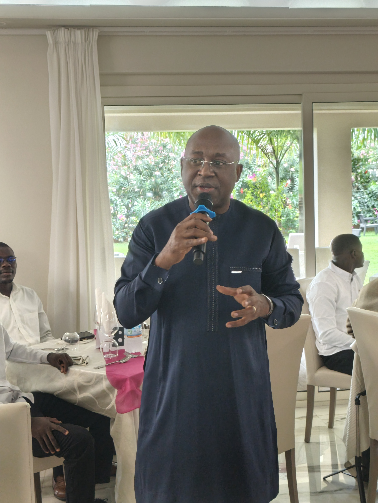
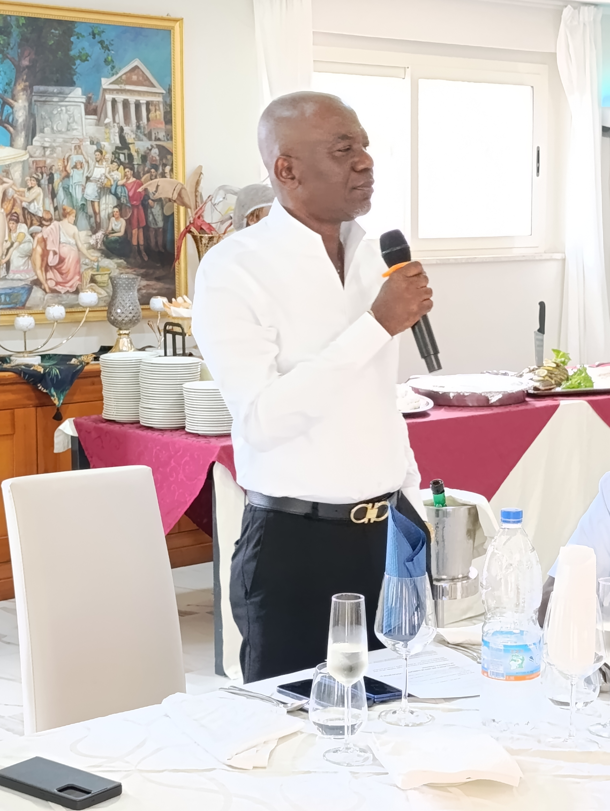
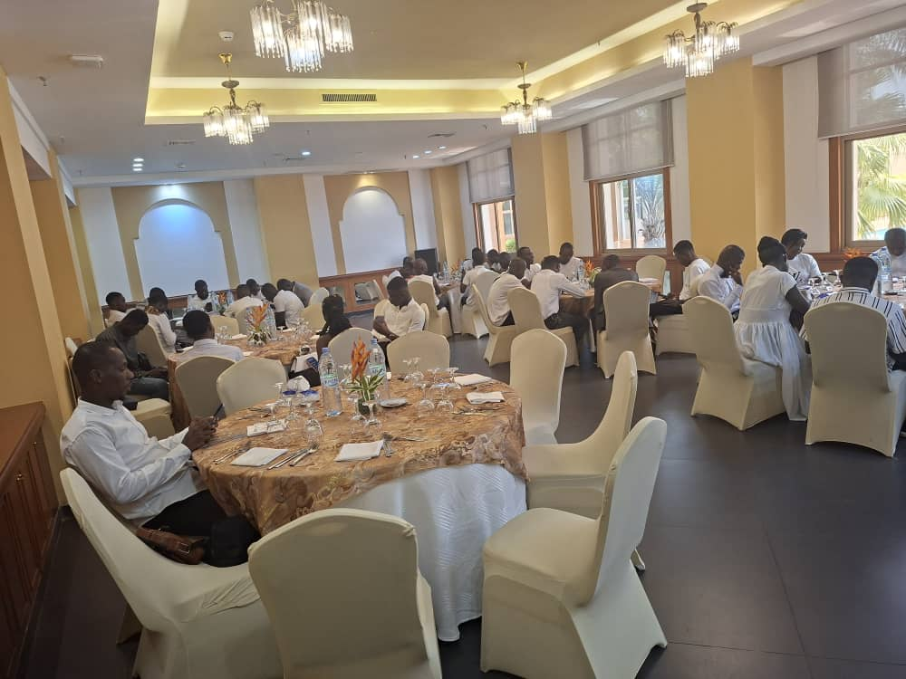
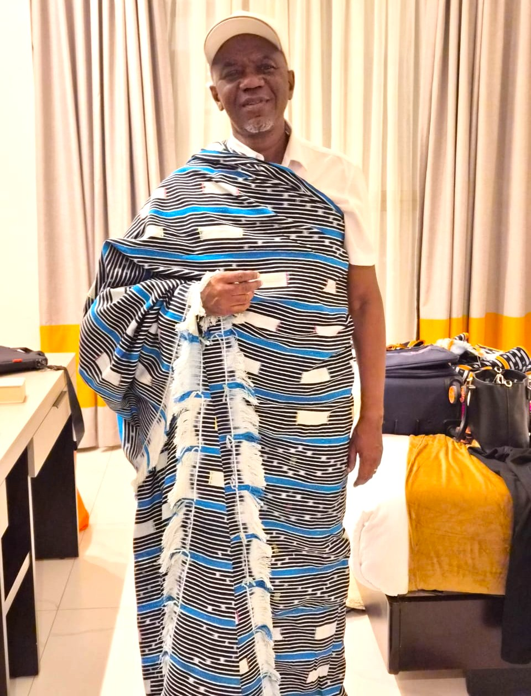

Célébration et Perspectives : La Grande Fête de Fin
d'Année d'Ivoire Techno Com !
L'année 2025 s'est achevée en beauté chez Ivoire
Techno Com (ITC) avec une magnifique manifestation de
fin d'année, réunissant l'ensemble de nos
collaborateurs, partenaires et familles pour un moment
inoubliable de convivialité et de partage. Cet
événement, désormais une tradition chère à notre
entreprise, a été l'occasion de célébrer les succès de
l'année écoulée, de renforcer les liens qui nous
unissent et de remercier chacun pour son engagement et
sa contribution.
Placée sous le signe de la reconnaissance et de
l'espoir, cette soirée a mis en lumière les
réalisations majeures d'ITC dans les secteurs de la
fibre optique et des télécommunications en Côte
d'Ivoire. Des discours inspirants de notre direction
ont rappelé l'importance de notre mission et les
valeurs qui guident notre travail au quotidien.
L'équipe ITC réunie pour cette belle soirée.
Un programme riche en émotions et en divertissements
La soirée a été rythmée par un programme varié :
animations musicales entraînantes, concours de dance par service.
Ces moments forts ont démontré la synergie
et l'esprit d'équipe qui animent ITC, au-delà des
défis techniques et opérationnels.
"Cette fête est bien plus qu'une simple célébration;
c'est le reflet de notre culture d'entreprise, où
le travail acharné et la solidarité sont
récompensés. Nous sommes fiers du chemin parcouru et
enthousiastes pour l'avenir."
"En tant que partenaire stratégique, Côte d'Ivoire Câbles se réjouit de l'excellence opérationnelle d'ITC. Notre synergie est le moteur qui permet de tisser la toile numérique de notre nation avec des infrastructures de qualité supérieure."

L'Invité Spécial, DG de CIC, salue le partenariat fructueux avec ITC lors de la cérémonie.
Partenariat Stratégique 2026 : Connecter la Côte d'Ivoire avec Excellence
L'intervention de l'Invité Spécial a mis en lumière l'importance de la collaboration entre les deux structures,
et surtout il a donné de sages conseils à l'équipe de ITC dans l'objectif de booster le travail dans sa réalisation.
Pour 2026, CIC s'engage à accompagner ITC dans ses défis d'expansion en garantissant la disponibilité de technologies de câblage de dernière génération.
Ensemble, CIC et ITC réaffirment leur volonté commune de propulser le développement numérique du pays et d'apporter une connectivité fiable dans chaque foyer et entreprise ivoirienne.

Le Directeur Général partage sa vision et remercie
les équipes.
Étape Spéciale à Yamoussoukro : ITC Intérieur en Fête !
Samedi 24 Janvier 2026
Lieu : Yamoussoukro, Côte d'Ivoire
La célébration ne s'est pas limitée à la capitale. Le samedi 24 janvier 2026, c'est la ville de
Yamoussoukro qui a vibré au rythme de la grande famille ITC Intérieur.
Cet événement décentralisé a permis de mettre à l'honneur nos techniciens et agents qui œuvrent
quotidiennement au déploiement de la fibre optique dans les régions.

Les équipes d'ITC Intérieur réunies à Yamoussoukro pour marquer le début de l'année 2026.
Dans une ambiance fraternelle, les équipes ont partagé un déjeuner mémorable. Ce fut l'occasion
pour la direction de saluer la bravoure de ceux qui bravent les terrains parfois difficiles pour
garantir une connectivité de qualité à chaque citoyen, même dans les zones les plus reculées.
Cette escale à Daloa symbolise notre volonté de rester une entreprise proche de ses hommes,
partout sur le territoire national.
Un Hommage aux Racines : Le DG à l'Honneur

Le Directeur Général, arborant fièrement la tenue traditionnelle offerte par les chefs de services et l'équipe de l'Intérieur.
"Recevoir cette tenue est pour moi plus qu'un honneur, c'est le symbole de notre unité.
Peu importe la distance entre nos bureaux d'Abidjan et nos chantiers à l'intérieur, nous ne formons qu'un seul cœur."
Perspectives pour 2026 : Toujours plus loin avec la fibre !
Perspectives pour 2026 : Toujours plus loin avec la
fibre !
Au-delà de la fête, cet événement a également été
l'occasion de partager les grandes orientations
stratégiques pour l'année 2026. ITC s'apprête à
relever de nouveaux défis, à étendre son réseau de
fibre optique et à innover davantage pour offrir des
services de télécommunications de pointe à toute la
Côte d'Ivoire. Nous sommes déterminés à maintenir
notre position de leader et à contribuer activement au
développement numérique du pays.
Nous remercions tous ceux qui ont contribué au succès
de cette année et de cette magnifique manifestation.
L'équipe ITC est plus que jamais prête à connecter
l'avenir !